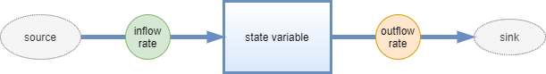
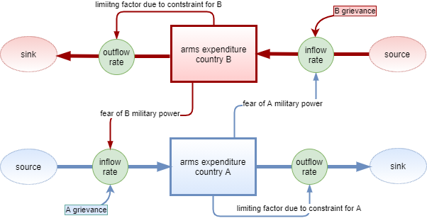
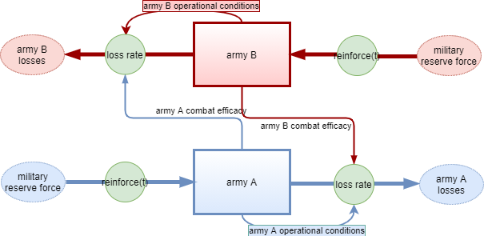

4 Dynamics of War
“War does not determine who is right only who is left”
Bertrand Russell
War has so far been analyzed in terms of strategy using game theory and in terms of probability using Markov chains. This chapter tries to begin to understand some causal mechanisms of war using the most powerful mathematical tool: differential equations.
Benoit Mandelbrot said: “If you assume continuity, you can open the well-stocked mathematical toolkit of continuous functions and differential equations, the saws and hammers of engineering and physics for the past two centuries (and the foreseeable future).” Alan Turing puts the same idea more succinctly: “Science is a differential equation”.
Differential equations describe the rate of change of a system with respect to some independent variable such as time in the specific case of dynamical systems. In other words they are statements about the instantaneous rate of change, or derivative, of functions.
Differential Equations can describe how populations change, how heat moves, how springs vibrate, how radioactive material decays and much more.
Later in this chapter, after a brief introduction to dynamical systems, adaptations of Richardson’s arms race models and Lanchester’s combat models provide an explanation of the relationship between identified causal factors and the outcomes of the arms race and of combat over time.
4.1 dynamical system
A dynamical system is a model describing the temporal evolution of a system, it is a mean of describing how one state develops into another state over the course of time.
As this chapter proceeds, dynamic models will be represented both in their mathematical form as systems of differential equations and as stock and flow diagrams.
The mathematical definition of a dynamical system is as follow: \[\frac{d}{dt}x = f(x,t,u;\beta)\] where:
x, called state vector, contains the minimum set of variables needed to describe the system under study;
f, the dynamics, is a set of functions each one representing the derivative with respect to time of the corresponding state variable in the state vector;
u, control or actuation, are variables influencing the state of the system that one have control over;
\(\beta\), are a set of parameters for which the analysis is useful.
The proceeding of this chapter considers only linear systems, in the state variables, and autonomous ones, i.e. in which time \(t\) is not present in the dynamics.
The solution of a dynamical system is a set function of time for each state variable: \(x(t)\).
In order to formulate a dynamical system, the use of the diagram is very helpful to clarify the structure of the system and to formalize the equations that rule the evolution over time.
The diagramming methodology of stocks and flow is used for this purpose in the chapter proceedings. Note that the graphic symbols differ from those reported in the literature.
These diagrams consist of:
state (or stock) variables, displayed as rectangles;
flow variables, displayed as thick arrows with a circle in the middle;
control (or auxiliary) variables, displayed with no symbol;
parameters and constants, with no symbol;
causal links between variables, displayed as thin arrows;
source and sink, displayed with oval, representing the boundary of the modeled system.
Each stock is thought of as the accumulation of each state variable in the system. It is thus said that the system has memory (or history).
There are two types of flows: inflows and outflows. Inflows are perceived as the rate at which the state variable (the flow is going to) is increasing over time. Similarly, the outflow is the rate at which the stock (the flow is going out from) is decreasing.
State and flow variables differ in their units of measurement. A stock is measured at one specific time, and represents a quantity existing at that point in time, which may have accumulated in the past. A flow variable is measured over an interval of time. Therefore, a flow would be measured per unit of time. Flow is roughly analogous to rate or speed in this sense.
State variables can only change due to flows into and out of them. The net flow is eventually the outflow subtracted from the inflow.
In other words the net flow is therefore the derivative of the state variable with respect to time. \[\frac{d\ state\_variable}{dt} = inflow(t) - outflow(t)\]
It is now easy to understand that a state variable is the integral, the inverse operation of the derivative, of the net flow added to the initial value of the state variable or stock.
\[state\_variable(t) = \int_{t_0}^t [inflow(s) - outflow(s)] ds + state\_variable(t_0)\]
All said can be condensed in this simple stocks & flows diagram.

The solution methods of a dynamical system are not in the scope of this short essay.
4.2 arms race model
In the context of this section, the arms race is defined as a competition between two nations or alliances for military superiority through the development of new and more powerful weapons and the strengthening of armed forces.
A causal arms race model was originally developed by Lewis Fry Richardson after serving for the French medical corps in World War I. His model considers three main causes for which nations increase or decrease their armaments.
The three hypothesized causal relationships included in the model adapted for this essay are:
a nation makes changes to its own levels of arms spending proportional to that of the competing nation out of fear of military insecurity;
arms spending is limited by the country’s overall economy and also by its political system. This constraint is proportional to the size of one’s current military spending;
hostilities, ambitions, and grievances drive nations to arm at a constant rate also independently from direct military threat from another nation.
The following stock and flow diagram shows graphically the model definition. The thick arrows represents the flows. Each thin arrow show a causal relationship.

The state variables or stocks, displayed as rectangles, represent the military spending of both nations in the competing arms race.
The system boundaries, shown as ovals, represent where spending power comes from, the sources, and where military spending savings, the sinks, are allocated. In the specific case, therefore, the model foresees interactions both in input and in output only with the global expenditure of each nation.
The inflow rate for both nations is governed by:
a positive factor proportional to the arms expenditure of the competing nation representing the fear response to a increased military power of a competing nation;
a positive constant factor that indicates the nation hostility and grievance towards other countries.
The outflow rate for both nations is governed by:
- a negative factor proportional to its own expenditure representing the internal economical and political constraints.
From the stock and flow diagram is relatively easy to write the differential equations that rule the arms race phenomenon structured as per the model diagram assuming that each causal effect is additive.
\[ \frac{d\_milexA}{dt} = fa \cdot milexB - la \cdot milexA + ga \]
\[ \frac{d\_milexB}{dt} = fb \cdot milexA - lb \cdot milexB + gb \]
The instantaneous rate of change of each nation’s military expenditures is given by:
a positive factor proportional to the dimension of the competing nation’s military expenditure. Whose proportionality constant \(fa\) or \(fb\) represents the nation’s fear of its opponent;
a negative factor proportional to one’s own expenditures with the constant \(la\) or \(lb\) indicating the limiting strength of the internal conditions in the country;
a constant positive rate \(ga\) or \(gb\) which represents the resentment and belligerence present in the nation itself.
In order to explain the behavior of the arms race phenomenon, four scenarios have been considered:
both nations react out of fear to the other nation’s arming effort;
both nations have strong economical and/or internal politics restrains;
one nation is hostile towards the other that reacts out of fear;
only one nation is subject to strong internal constraints.
In the table below the model parameters for each scenario are displayed.
| parameter | both react by fear | both economical restrains | hostility balanced by fear reaction | one nations with economical restrains |
|---|---|---|---|---|
| reaction by fear A | 4.5 | 1.5 | 1.5 | 2.0 |
| restrain A | 1.5 | 3.5 | 1.0 | 1.5 |
| grievance A | 0.5 | 0.5 | 5.5 | 0.5 |
| reaction by fear B | 3.5 | 2.5 | 4.5 | 2.5 |
| restrain B | 1.0 | 4.5 | 1.5 | 4.5 |
| grievance B | 0.5 | 0.5 | 1.0 | 1.5 |
To explain the behavior of the arms race phenomenon in each scenario, this chapter proceeds to a phase plane analysis.
The phase plane is a graph that allows an analysis of the infinite solutions of a dynamic system by representing on the plane of the state variables, \(milexA\) and \(milexB\), both the vector field, i.e. the derivatives at each point of the plane, and each nullcline, the line for which the derivative of a state variable with respect to time is 0.
Specifically the arrows of the vector field indicate the direction in which the system evolve over time. A specific path of the system defined by the state variables and governed by the specified dynamics that follows the vector field from a specific starting point in the phase plane is called a trajectory. A trajectory is a specific solution of the dynamical system given a initial condition: an initial state of the system.
To facilitate the visualization, some significant trajectories relating to different initial conditions are plotted in the phase plane.


The first quadrant phase plane, top left, represents a situation where both nations react strongly by fear but have no significant economic restrictions or hostility toward the other nation. The vector field shows that:
in the region where military expenditure for nation B is higher than one of nation A the arrows point towards an increase of military expenditure for nation A, from left to right;
in the region where military expenditure for nation A is higher than one of nation B the arrows point towards an increase of military expenditure for nation B, from bottom up;
in the region where military expenditure for nation B and nation A are comparable the arrows point towards an increase of both military expenditure, towards upper right of the plane.
The arms race in this case leads each nation to a continuous growth of its military expenditures. Regardless of where each nation started in the long run they will have a high similar amount of expenses in military defense.
The phase plane in the upper right quadrant instead refers to a situation where both nations are in dire economic straits. In this scenario the vector field arrows bend towards the lower left corner of the phase plane, towards both nations’ military spending reduction. Thus, in the long run, both nations will end up with zero military spending.
The phase plane in the lower left quadrant is very similar to that in the upper left but is produced by different causes. In this scenario, nation A’s resentment of nation B is balanced by nation B’s fearful reaction of armed conflict. For this reason the arrows of the vector field in the region with higher expenditure for A goes form bottom to top while in the region with higher expenditure for B bend slightly down but then goes up. Since the reaction out of fear has a growth proportional to the spending of the competing nation while that out of resentment is a constant growth, the evolution of military spending over time will lead nation B to spend more than nation A.
The last phase plane, bottom right, shows that in case of only one nation has significant economic restriction in the long run the the military expenditure of both nations will be reduced. The vector field is similar to that in the graph directly above but the upper region where the arrows are directed from top left to bottom right is much larger. Also notice how the area where the arrows point directly at zero narrows. Since country B has more restrictions, its decline in military spending is faster and sharper where country A’s spending is slightly higher.
The analysis of the model performed in the time domain for some specific initial spending is displayed in the following four graphs.


The top left graph shows the exponential growth of each nation’s military spending when fear response is the primary factor for each nation. This tendency is due to the fact that in this case the predominant cause is the fear reaction of a possible armed conflict which has an effect proportional to the level of expenditure of the opposing nation.
The graph at the top right instead shows the exponential decay of each nation’s military expenditures due to strong internal constraints. Since the effect is proportional to the expenditure level by each nation, the nation with the least level of expenditures at an early stage shows an armaments growth due to the contribution of the other two causes identified by the model: the fear reaction and preconceived hostility.
The graph on the bottom left instead shows the growth of military expenditures determined by a nation that is strongly hostile but which does not let itself be guided by fear which is opposed by a nation guided by a reaction of fear towards the possible armed conflict. Since the hostility effect modeled is one of steady growth, in the long run the nation reacting primarily out of fear, an effect modeled as proportional to the enemy nation’s spending, will spend more on armaments.
The bottom right last graph shows that the restrictions imposed by the economy on a single nation contribute to a slow dynamic of expenditures decrease under conditions of low hostility and normal reaction out of fear of the opposing nation. In the long run the nation with a stronger economy will lead the race without incurring a huge expense.
4.3 combat model
The Lanchester combat model points to the strength of armies as the root cause of the outcome of a battle or war.
Losses in an army for this model are due:
mainly to the effectiveness, due to preparation, armament and equipment, and to numeric consistency of the enemy army;
but also to the operational conditions of the conflict, including army morale which may facilitate desertions and unenforced surrenders and logistics capabilities which may also lead to casualties from disease and excessive fatigue.
Later in the presentation of the model, as a further element affecting the result of the combat, the possibility of receiving reinforcements from military reserves was taken into consideration.
The following stock and flow diagram is a schematic representation of the combat model freely adapted for this essay. The diagram maps each causal hypothesis above into specific symbols.

The two stocks, displayed as rectangles, represent the consistency or rather the strengths of the opposing armies.
The boundaries to the model, represented as ovals, are in input the reserve military strength of each army, i.e. the source of reinforcements, and in output the losses suffered by each army, the sink.
The outflow for each army is governed by a loss rate composed of a factor proportional to the size of the enemy army and a factor proportional to the size of one’s own army.
The proportionality parameter for the first factor indicates the combat effectiveness of the enemy army and includes considerations such as equipment, weapons and training. The higher this parameter, the more losses one army can inflict on the other.
The proportionality parameter for the second factor indicates the operational condition of the army and includes considerations such as morale, logistics, supply. The lower this parameter, the better the operating conditions of the army at the front, the less losses the army itself will suffer from operational causes.
The inflow is an input function of time representing the possibility of having reinforcements.
The following differential equations are the translation in mathematics of the stock and flow diagram above.
\[ \frac{d\ armyA}{dt} = + Areinforce(t) - Befficacy \cdot armyB -Aops \cdot armyA\] \[ \frac{d\ armyB}{dt} = + Breinforce(t) - Aefficacy \cdot armyA -Bops \cdot armyB\]
The instantaneous rate of change of an army with respect to time is given by:
a function over time representing the arrival of reinforcements, with the plus sign as it is the inflow;
the factor representing the losses inflicted by the enemy, with a minus sign as it is a component of the rate of outflow;
the factor representing the losses due to operational reasons, also in the outflow rate.
In order to better understand the combat model, two different situations has been simulated. The situation called army B strongest simulates army B is better equipped and trained and it is subject to minor operational loss not considering its initial consistency. The situation called army A strongest on the contrary foresees army A with stronger parameters.
In the table below the model parameters for each situation are displayed.
| parameter | army B strongest | army A strongest |
|---|---|---|
| B efficacy | 0.05 | 0.03 |
| A operational conditions | 0.001 | 0.0008 |
| A effecacy | 0.025 | 0.05 |
| B operational conditions | 0.0007 | 0.002 |
Initially the two models have been studied without the possibility of having reinforcement, without the inflow.


The phase plane graphs of the two scenarios show how the trajectory of the war progress strongly depends on the initial army levels. When Army B is better trained, equipped, and determined, Army A can only defeat the enemy if the initial army size is larger. The same is true in reversed positions when Army A is better equipped, trained, and determined. In fact, in the first case, in the left phase plane, the area of the vector field where the arrows point to the left, towards the zeroing of Army A’s strength, is greater, while in the right phase plane, the area where the arrows point down, towards Army B’s strength at zero, is greater.
In the time domain the two models analyzed in the phase plane have been solved for specific initial conditions.


In the first scenario with Army B better equipped and prepared, the initial level of Army A is fixed at 1200 units while Army B has 1000 units. In 35 time units, days or hours depending on the analysis setting, Army A is wiped out despite starting with 200 more units because a better equipped, better prepared and more determined army can overcome a larger army.
The second scenario instead shows that the numerical strength of the army defines the outcome of the war when the numerical gap of the army is too significant. Army A has 900 units while Army B has 1200 units. The difference in preparation, equipment and determination does not compensate for the gap in strength. Thus the overall level of Army B remains higher than Army B.
Finally, the inflow part of the model, the arrival of reinforcements, is added not as a continuous function of time but, for simplicity, as discrete events at certain specific times.


In the first scenario, army B strongest and same initial conditions as in above model, the reinforcements for army A arrive in 5 consecutive times, from time 23, for a total of 340 units. But the mobilization of the reserves does not change the final outcome even if for a certain moment the forces in the field are again in favor of Army A.
In the second scenario, army A strongest and same initial consistency of the armies, the arrival of reinforcements for army A is concentrated in one moment, time 18, with 300 more units. In this case, being Army A better equipped, better trained and more determined, the arrival of reinforcements reverses the outcome of the war by changing the proportion of forces in the field.
4.4 key takeways
Using mathematical modeling with differential equations, it is possible to analyze the causal relationship and understand the reasons that determine a specific outcome over time.
The two models presented above are adapted from the literature and are simple enough to be almost self-explanatory.
Despite the very strong simplifications of these two models, they can be used to obtain useful ideas for developing strategies and tactics.